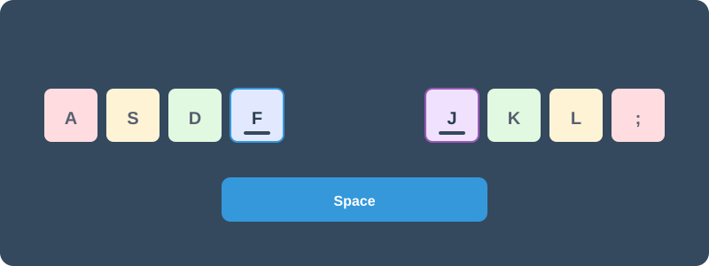

タイピング（文字入力）の基本
パソコンを使いこなす第一歩は、「タイピング」です。メールを書いたり資料を作ったりする際、キーボードを見ずに打つ「タッチタイピング」ができるようになると、作業の疲れが劇的に減り、スピードも驚くほど上がります。
1. 「F」と「J」にある小さな突起の正体
キーボードをよく見てみてください。「F」と「J」のキーにだけ、小さな出っ張り（突起）がついているのに気づきましたか？
実はこれが、タッチタイピングにおいて最も大切な「目印」です。この突起に左右の人差し指をそっと添えることで、手元を見なくても自分の手が今どこにあるかを脳が把握できます。
💡 上級者でも、突起がないと打てません
意外かもしれませんが、タイピングのプロや上級者であっても、この「F」と「J」の突起がなくなると、正確に文字を打つことが極めて困難になります。
上級者は、常に指がこの突起に触れている感覚を「命綱」にして、画面だけに集中しています。初心者の皆さんも、まずは指先でこの小さな突起を探す練習から始めてみましょう。手元を見る回数がぐっと減るはずです。
2. 指別の担当カラーを覚えよう
タッチタイピングを習得する近道は、「どの指でどのキーを押すか」を決めてしまうことです。ぱそトレ！では、以下のように指ごとに色を分けて練習することをお勧めしています。

▲ ぱそトレ！式：指別担当カラーガイド（FとJの突起が目印！）
特に、左手の人差し指（青）と右手の人差し指（紫）の役割を意識することが、左右の手の混乱を防ぐコツです。
3. 練習のコツは「ゆっくり・正確に」
タイピング練習で最も大切なのは、速さではなく「正確さ」です。ミスが多いまま速く打とうとすると、指が間違った場所を覚えてしまいます。まずはホームポジション（FとJの突起）に指を戻すことを意識しながら、ゆっくりと正しい指で打つ練習を積み重ねましょう。